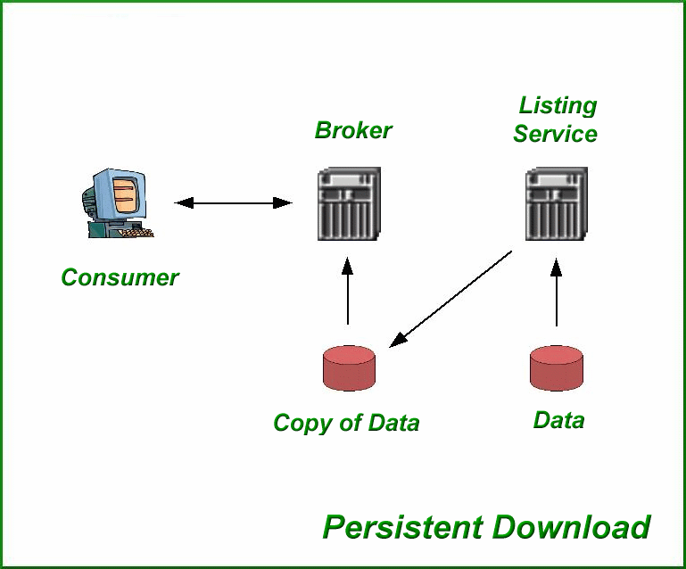
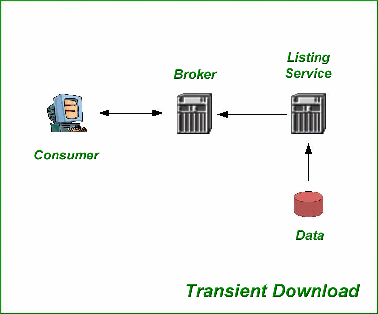

|
1.0 Operational Theory
|
This package allows you to download listings from a RETS server and store them
in a variety of formats. It is coded in the popular PHP language.
One of the most common approaches used to collecting information that supports
consumer websites is to download data and images from a Multiple Listing
Service (MLS). This information is then stored in a repository that is used
to support consumer inquiries. The local repository is then refreshed on a
periodic basis. The term we will use for this style will be Persistent
Download. A graphic that depicts the elements of this approach follows.
|
|
|

|
|
Another approach to supporting consumer-oriented websites called
Transient Download.
With this approach, data is never replicated on your server. A graphic that
depicts the elements of this approach follows:
|
|
|

|
This package uses Persistent Download.
Detailed information about maintaining this package can be found in the
Configuration Guide
. There you will find information about how to specify connections to MLS
servers and define targets.
|
|